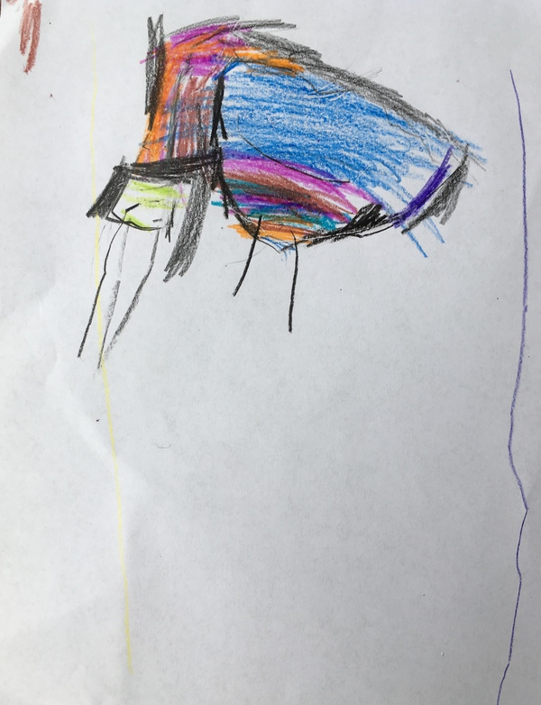
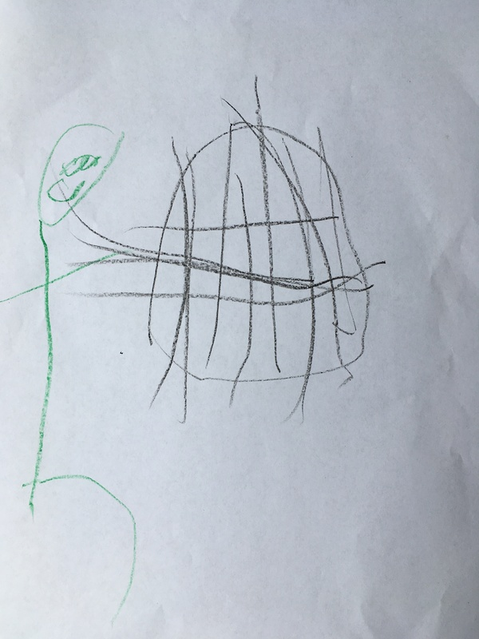
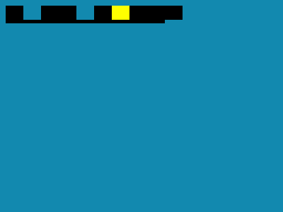
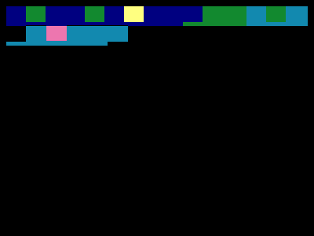
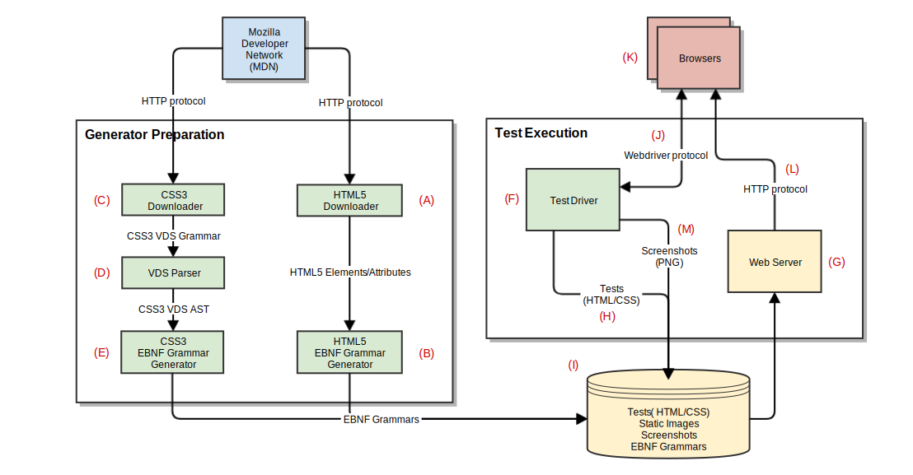
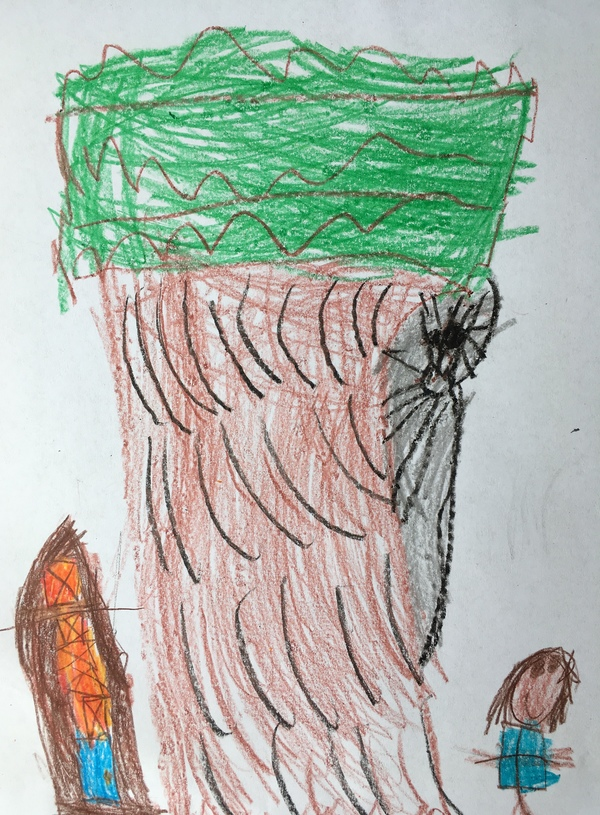

Browser Testing Using Grammars and a Consensus Oracle
Strange Loop 2018
Joel Martin
Questions at: https://sli.do (Event #SL18)
Press 's' to show speaker notes
Introduction

Introduction part 2
- Engineer at ViaSat
- PhD Student at UTA
- noVNC
- mal / make-a-lisp
The Challenges
- Test Cases
- Test Oracle
Browser Rendering
<html>
<body style="background: #1289af">
<div style="left: 10%; width: 20%;
font: 'Fira Sans' 25px/1
rgba(100,100,100,0.5)">
Pythia, Apollo, Dione.
</div>
</body>
</html>
- Element sizing and positioning
- Environment factors (Screen geometry, OS)
- Color model and alpha blending
- Font rendering (kerning, spacing)
A Solution
- Property-Based Testing (PBT)
- Grammar-Based Input Generators
- Consensus-Based Test Oracle
Property-Based Testing (PBT)
- QuickCheck (Claessen & Hughes, 2000)
- Input properties: generators
- Output properties: success/failure (e.g. test Oracle)
- Output property violations indicate test failure
- Grow "size" until output properties violated
PBT Test Shrinking
- Tree of generator nodes
- Pick node, try small size value
- Continue until "smallest" discovered
- Critical for compound/recursive generators
Simple PBT Example
- Input property: P is a sequence of integers
- Output property: sum of integers in P (almost)
> (def SUT
(fn [x] (apply + x)))
> (tc/quick-check 10
(props/for-all
[P (gen/vector gen/int)]
(= (SUT P) (apply + P))))
{:result true,
:num-tests 10}
Simple PBT Example
- Input property: P is a sequence of integers
- Output property: sum of integers in P (almost)
> (def SUT
(fn [x] (apply + x)))
> (tc/quick-check 100
(props/for-all
[P (gen/vector gen/int)]
(= (SUT P) (apply + P))))
{:result true,
:num-tests 100}
Simple PBT Example
- Input property: P is a sequence of integers
- Output property: sum of integers in P (almost)
> (def SUT
(fn [x] (if (<= 13 (count x) 17) 0 (apply + x))))
> (tc/quick-check 10
(props/for-all
[P (gen/vector gen/int)]
(= (SUT P) (apply + P))))
{:result true,
:num-tests 10}
Simple PBT Example
- Input property: P is a sequence of integers
- Output property: sum of integers in P (almost)
> (def SUT
(fn [x] (if (<= 13 (count x) 17) 0 (apply + x))))
> (tc/quick-check 100
(props/for-all
[P (gen/vector gen/int)]
(= (SUT P) (apply + P))))
{:result false,
:num-tests 31,
:fail [[1 19 12 18 -7 30 -8 15
13 -15 8 -3 1 -21 10 19]],
:shrunk {:total-nodes-visited 262,
:smallest [[0 0 0 0 0 0 0 0 0 0 0 0 0]]}} Input Generators
- Test Case Composition (web pages):
- HTML (content)
- CSS (presentation)
Grammar-Based Generators
- W3C Specifications → Spec Data
- Spec Data → EBNF Grammar
- Grammar EBNF → Generators
- Generators → HTML+CSS
CSS Value Definition Syntax (VDS)
- VDS
<'text-emphasis-position'> = [ over | under ] && [ right | left ] - EBNF
prop-text-emphasis-position = ( ( 'over' ' ' | 'under' ' ') ' ' ( 'right' ' ' | 'left' ' ') ' ' ) ;
CSS Value Definition Syntax (VDS)
- EBNF
prop-text-emphasis-position = ( ( 'over' ' ' | 'under' ' ') ' ' ( 'right' ' ' | 'left' ' ') ' ' ) ; - Generators:
(gen/tuple (gen/frequency [ [100 (gen/tuple (gen/return "over") (gen/return " "))] [100 (gen/tuple (gen/return "under") (gen/return " "))]]) (gen/return " ") (gen/frequency [ [100 (gen/tuple (gen/return "right") (gen/return " "))] [100 (gen/tuple (gen/return "left") (gen/return " "))]]) (gen/return " "))
Controlling the Grammar
- Tunable weights at grammar alternation points
Revisiting the Grammar
- text-emphasis-position generator:
(gen/tuple (gen/frequency [ [100 (gen/tuple (gen/return "over") (gen/return " "))] [100 (gen/tuple (gen/return "under") (gen/return " "))]]) (gen/return " ") (gen/frequency [ [100 (gen/tuple (gen/return "right" (gen/return " ")))] [100 (gen/tuple (gen/return "left") (gen/return " "))]]) (gen/return " "))
Revisiting the Grammar
- text-emphasis-position generator:
(gen/tuple (gen/frequency [ [(get weights [:prop-text-emphasis-position :cat 1 :alt 0] 100) (gen/tuple (gen/return "over") (gen/return " "))] [(get weights [:prop-text-emphasis-position :cat 1 :alt 1] 100) (gen/tuple (gen/return "under") (gen/return " "))]]) (gen/return " ") (gen/frequency [ [(get weights [:prop-text-emphasis-position :cat 3 :alt 0] 100) (gen/tuple (gen/return "right") (gen/return " "))] [(get weights [:prop-text-emphasis-position :cat 3 :alt 1] 100) (gen/tuple (gen/return "left") (gen/return " "))]]) (gen/return " "))
Weights File
- weights.edn:
{ ... [:prop-text-emphasis-position :cat 1 :alt 0] 100, [:prop-text-emphasis-position :cat 1 :alt 1] 50, [:prop-text-emphasis-position :cat 3 :alt 0] 100, [:prop-text-emphasis-position :cat 3 :alt 1] 50, ... }
Demo Time
instacheck - instaparse meets test.check
Demo Time
Instacheck
"Dad protecting the web."
Test Oracle
Consensus Oracle
- Multiple implementations
- Browsers:
- Chrome, Firefox
- Edge, Internet Explorer
- Opera, Vivaldi
- Brave, UC Browser
- Chromium, Servo, Pale Moon, Dolphin, Tor Browser, Maxthon, Baidu Browser, etc, etc
Consensus Example
<html>
<body style="background: #1289af; font: 25px/1 Ahem">
<marquee bgcolor="navy">
<q ...ELIDED... > pX </q>
</marquee>
p
<mark ...ELIDED...> </mark>
<strong style="offset-anchor: right;
box-align: stretch;
padding-right: -1.75vw" ...ELIDED...>
<mark ...ELIDED...> Xp XX </mark>
É
</strong>
</body>
</html>Consensus Example
| Firefox |
Chrome

|
Servo  |
Consensus Example
| Firefox |  | Servo |
|
Chrome
|
Consensus?
- Squared Sum of Differences (SSD) with a threshold.
Consensus Yet?
- One is at fault
- All members at fault
- No clear fault
Test System Architecture
Demo Time
tend - browser render testing
"The web has a spider named Oracle, and Daddy is protecting and fixing it. That’s his house he lives in."
Review
- The Challenges
- Test Cases
- Test Oracle
- A Solution
- Property-Based Testing
- Test Shrinking
- Grammar-Based Input Generators (instacheck)
- Consensus-Based Test Oracle (rend)
- Property-Based Testing
Links & Contact
- kanaka.github.io/strangeloop2018
- github.com/kanaka/instacheck
- github.com/kanaka/tend
- @bus_kanaka
- joel.martin@viasat.com
- We're hiring: viasat.com/careers
Questions?
https://sli.do (Event #SL18)
Extra Material
Beyond Browsers
- Implementation of standards
- Regression/fix testing
- Feature support matrix
HTML 5
- W3C Standard
- 130 Elements (tags)
- 110 Attributes
HTML Example
<html>
<body>
page document body
<div> div content </div>
<span class="myclass1"> span content </span>
<div id="mydiv1"> div content </div>
<b style="text-color: red"> bold red text </b>
<div>
<b> bold text within a div </b>
<span> span content within a div </span>
</div>
<a href="http://w3c.org"> text of link to W3C </a>
</body>
</html>CSS 3
- W3C Standard
- 50 sub-specifications (modules)
- 360 CSS properties
CSS 3 Example
- Stylesheet:
.classname #idname tagname {
background: rgba(0, 0, 0, 0.5);
border: 1px solid #fff;
transform: translate3d(0px, 0px, -45px) rotateX(90deg);
}
CSS 3 Example
- Inline:
<div style="background: rgba(0, 0, 0, 0.5);
border: 1px solid #fff;
transform: translate3d(0px, 0px, -45px)
rotateX(90deg);">
div content
</div>
Results
| Median | Maximum | |
|---|---|---|
| First fail | 8 iterations | 15 iterations |
| Fail size | 3,025 bytes | 109,983 bytes |
| Shrunk | 154 bytes | 245 bytes |